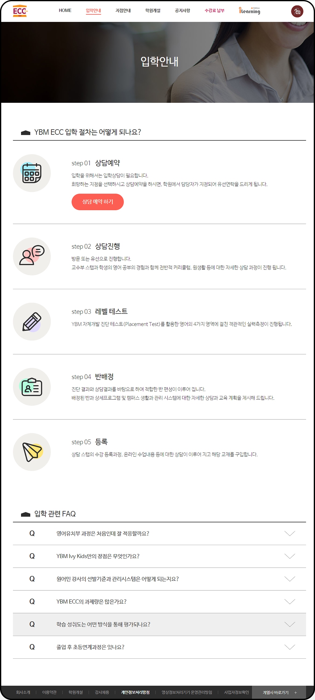
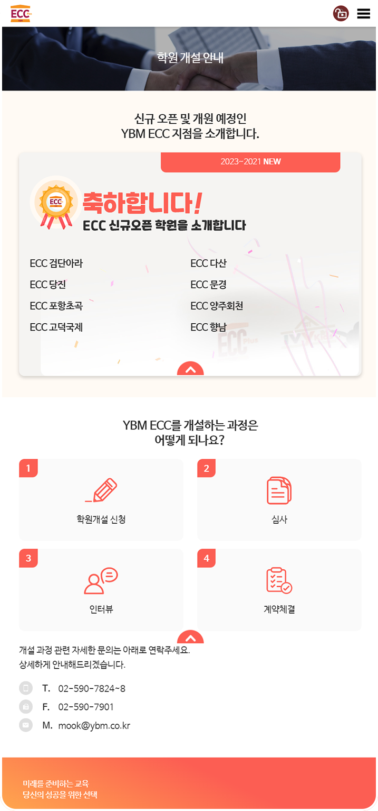
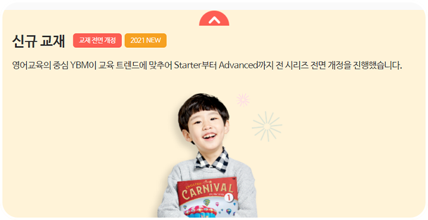
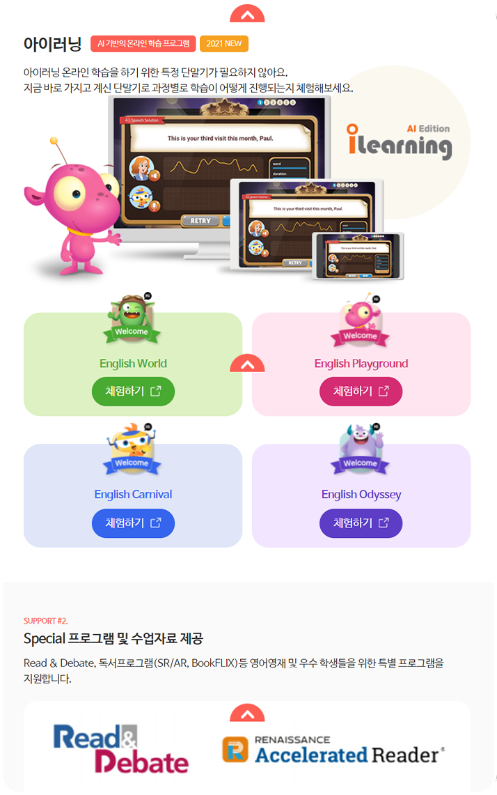
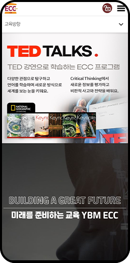
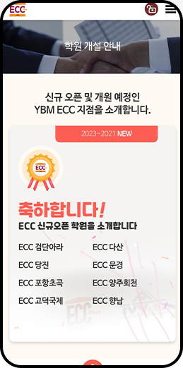
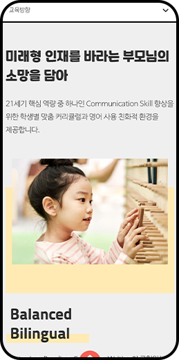
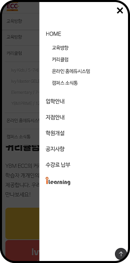
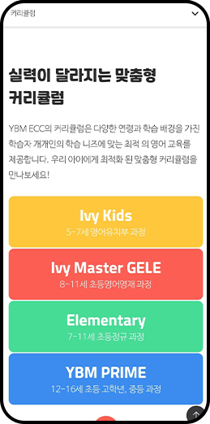
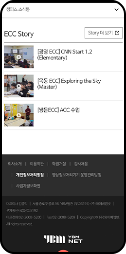

YBM ECC
YBM ECC
프로젝트명 YBM ECC 웹사이트 UX/UI
제작방식 HTML, CSS, JAVASCRIPT, JQUERY 반응형 구축
사이트바로가기YBM ECC는 영어 교육 사이트입니다. 21세기 핵심 역량 중 하나인 Communication Skill 향상을 위한 학생별 맞춤 커리큘럼과 영어 사용 친화적 환경을 제공하고 Listening, Reading, Speaking, Writing의 균형있는 4대 영역 개발로 영어를 모국어처럼 자연스럽게 습득하는 교육사이트 입니다.

OVERVIEW
웹사이트를 분석하고 개편되는 웹사이트에 미디어 매체의 역할과 사용자의 편의성을 적용하기 위해 디지털 매거진 매체에 최적화를 하였으며 불편함, 낮은 가독성, 답답함 같이 직관적이지 못한 요소들은 레이아웃을 변경한 UI로 웹사이트 개선에 사용했습니다.
-
YBM ECC
디지털 미디어YBM ECC
디지털 미디어
정확한 표현 필요 -
정보전달
직관적이지 못한 요소들로
인한 정보전달의 답답함 -
모바일 퍼스트
모바일 사용자의 증가로
인한 반응형 페이지 필요
-
신뢰성 있는 매체
단정한 블랙&화이트의 컬러와 사용자
의 편의성을 위한 구성을 사용하여
정보 미디어 매체의 필수요소인 신뢰
성을 표현했습니다. -
시원한 레이아웃
넓은 바디영역으로 다양한
콘텐츠가 답답하지 않도록 했습니다.
홈페이지에 다양한 섬네일으로 각 카
테고리가 분류되어 페이지가 시원해
보이도록 했습니다. -
모바일 최적화
단정한 블랙&화이트의 컬러와 사용자
의 편의성을 위한 구성을 사용하여
정보 미디어 매체의 필수요소인 신뢰
성을 표현했습니다.
# 새로운 인사이트의 디지털 매거진
01
썸네일의 형태
스크롤이 긴 페이지에서 사용자는 스크롤을 빠르게 합니다. 이러한 상황에서 섬네일의 모양이 같을 경우 섹션의 구분이 어렵습니다.
따라서 섹션별로 섬네일에 차별성을 두어 사용자가 섹션의 구분을 인지 할 수 있도록 했습니다.
02
기사의 다양한 형태와 엘리먼트
한 가지 형태가 아닌 기사의 스타일에 맞는 UI로 기사의 색깔이 명확하게 드러나도록 했습니다.
각 페이지에 엘리먼트를 사용하여 에디터가 편집에 들어가는 시간이 적어지게끔 폰트의 사이즈, 간격, 형태를 맞추었습니다.
기사 작성 시 번거로운 편집을 거치지 않아도 되게끔 편리함을 주었습니다.
-

 SIMPLE
SIMPLE
일반 이미지 -

SIMPLE
일반 텍스트 -

FEELING THE FLOW
화보
-
연관 기사 엘리먼트

-
인용구 엘리먼트

-
구매 엘리먼트

-
이미지 슬라이드 엘리먼트
Communication Skill
YBM ECC
03
Font&Color
YBM ECC의 아이덴티티에 모던하고 세련된 이미지를 주기 위해
심플한 폰트와 주황, 갈색, 흰색을 사용했습니다.
영문에서는 Roboto 폰트를 사용하여 렉서스의
브랜드 인식을 높이고 브랜드 가치를 강화시켰습니다.
-
Pretendard Bold · Semibold · Medium · Regular
와이비엠
-
Pretendard Bold · Semibold · Medium · Regular
YBM ECC
-
03
#f0a332
ORANGE -
02
#6c5e50
BROWN -
01
#FFFFFF
WHITE
04
모바일에서의 최적화
늘어나는 모바일 사용자를 위한 모바일 페이지 입니다.
-  
-  
-  